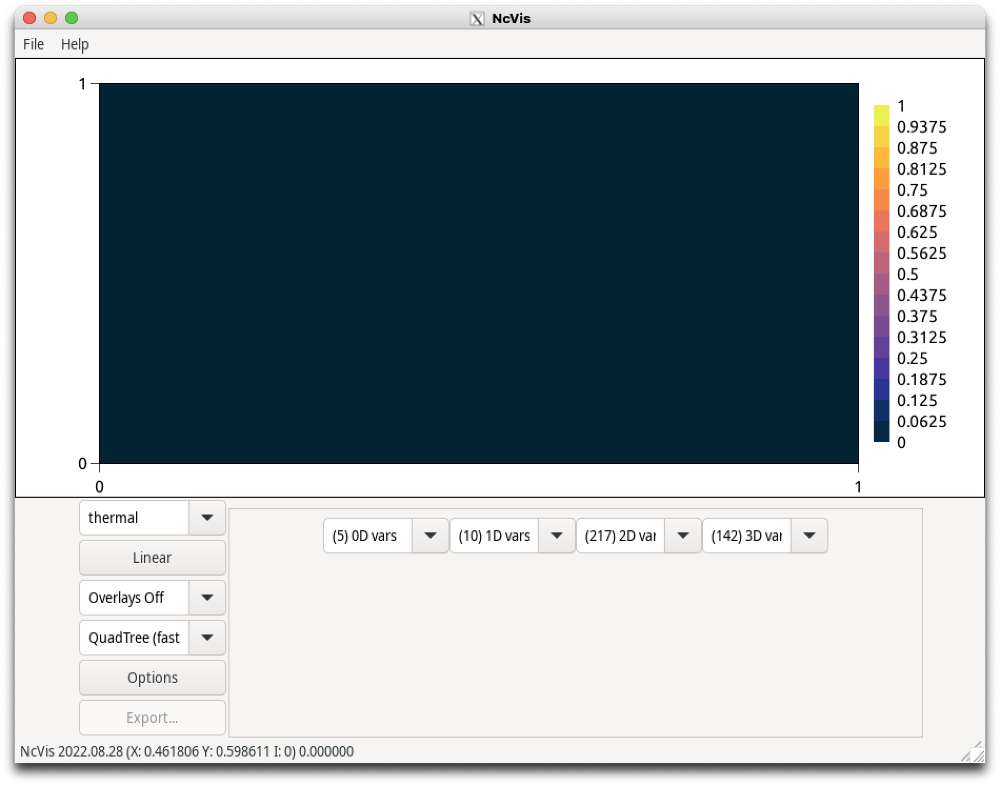
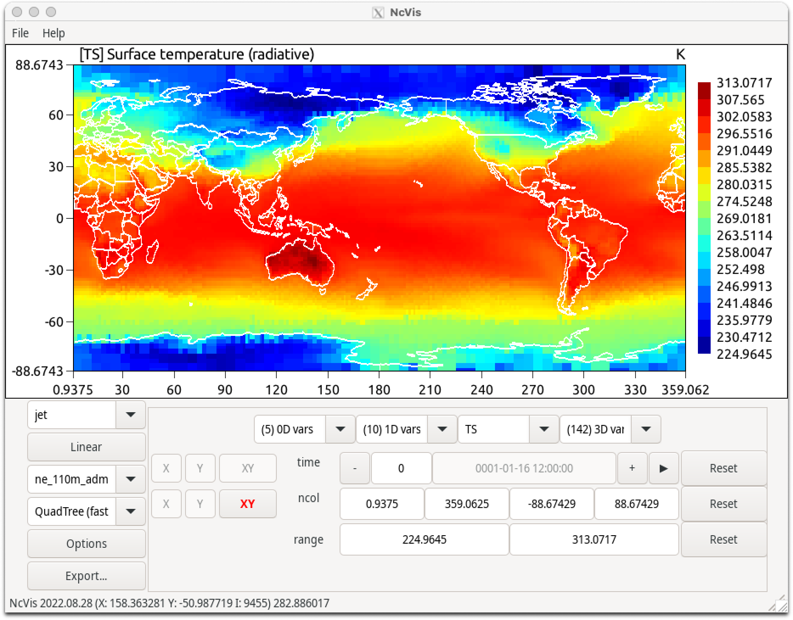
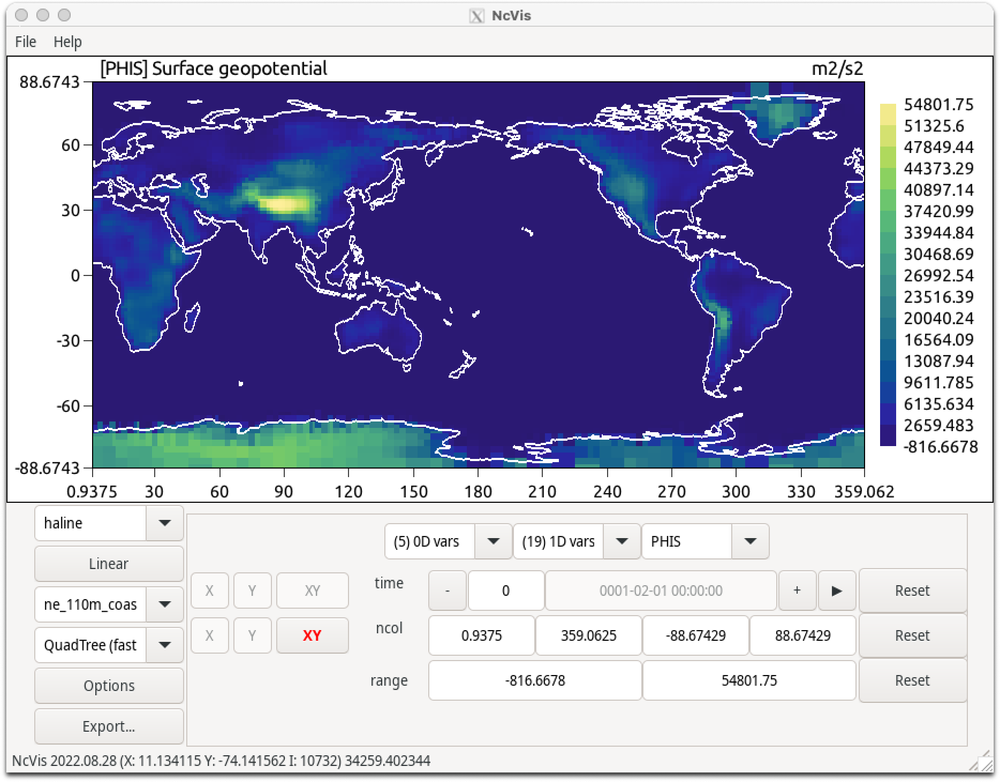

Examine History Files#
Having successfully completed your first month of the new CESM B1850 case, you will now examine the history files that have been transfered to the Archive directory. You will be using the NetCDF viewer Ncview to look at the monthly average values for the single month. For this exercise you will be looking at the output from the Community Atmospheric Model (CAM) component of CESM. However, the Ncview tool can be applied to other components, such as the Community Land Model (CLM). In this exercise we will:
Step 1. Explore the b1850.basics Archive directory.
Step 2. Open the b1850.basics CAM monthly history file using Ncvis.
Step 3. Examine Average Monthly Surface Temperature.
Step 4. Examine Instantaneous Geopotential.
Step 1. Explore the b1850.basics Archive directory#
The short term archive directory has a range of model component directories along with the restart (rest) and logs directories. First, change directory into the archive directory, and then list the contents of the restart and logs directories.
cd /glade/derecho/scratch/$USER/archive/b1850.basics
List the logs directory:
ls -l logs
This is where all the log files from the model run are stored.
List the logs directory:
ls -l rest/0001-02-01-00000
These are the files that CESM will use to restart the model.
Step 2. Open the CAM h0 monthly average history files#
You will now use ncvis to look at the b1850.basics case CAM monthly average values for the single month you ran.
If you are unfamiliar with ncvis, you can learn more at this link.
Note: You must load the ncvis module to your environment. If you loaded the tutorial .profile or .tcshrc file it should already be loaded. Check that it is in your environment.
module list
If you don’t see ncvis in the list of modules, you can load it by doing:
module load ncvis
cd atm/hist
List the files in the directory:
ls -l
There should be two files, b1850.basics.cam.h0a.0001-01.nc and b1850.basics.cam.h0i.0001-02-01-00000.
Open the h0a (average) file using ncvis:
ncvis b1850.basics.cam.h0a.0001-01.nc &
If your X11 environment is correctly set up, then the Ncvis tool should appear as shown below. It might be just a little slow to load. Note the & at the end of the command. This puts the command into the background, allowing other tasks to be run from the Derecho terminal window.

Figure: NCVis App Window
Step 3. Examine Average Monthly Average Surface Temperature#
Using Ncvis with the b1850.basics January 0001 CAM monthly average values file loaded, examine the Surface Temperature variable. Update the color palette used to plot values and change the size of the plot.
Click on the (217) 2D vars button shown above. This will pull up a list of all 2d vars on the b1850.basics January 0001 CAM average history file. This is a long list but it is in alphabetical order. You are looking for the TS variable.
Change the color selection from detail to bright:
Clicking on the top left drop-down (that says “thermal” in the image above) will give a list of possible color maps for the contour plot. Choose another option to see how the color scale can change.
Add map overlays:
Click on the dropdown on the left side that says “Overlays off” by default. There should be two more options, “ne_110m_coastline.shp” and “ne_110m_admin_0_countries.shp”. Try clicking each of these and see how maps are added to your temperature plot.
The Surface Temperature variable is in Kelvin. A value of 273.15K represents 0°C and 32°F. As you move your mouse cursor over the map, you will see the location given (“X:” and “Y:”) in the lower left corner and the temperature value at the cursor point. There are many options to better view and explore data with Ncvis. Some of these will come up over the next few days of the tutorial.

Figure: NCVis b1850.basics Average TS Jan 0001 with the Jet colorscale and map outlines
Step 4. Examine Instantaneous Surface Geopotential#
Components in CESM generally seperate history fields into seperate files by their averaging type and timescale. In the atmosphere model CAM, there are two history files by default. The “h0a” file holds fields averaged for the time period specified in the filename and file metadata. The “h0i” file hold instantaneous data from the timestep shown in the filename and the file metadata. In our basic example, the only field in the instantaneous file is surface pressure “PHIS”.
Open the h0i file using ncvis:
ncvis b1850.basics.cesm3.2.cam.h0i.0001-02-01-00000.nc &
Select the Surface Geopotential Variable:
Click on the (3) 2D vars button. Date written and Time written are metadata variables, but PHIS can be plotted. Choose a colorscale and map overlay that you like.

Figure: NCVis b1850.basics Instantaneous Surface Geopotential Feb 01 0001 00000 with the Jet colorscale and map outlines
By default, there is only one variable and one time slice written to the h0i file each month for this configuration. Later exercises will describe how to add more instantaneous or averaged output, more time slices per file, and other history file options.